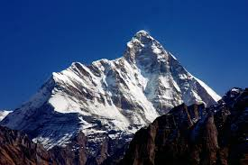
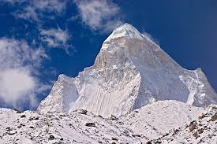

K2, the world’s second-highest peak at 8,611 meters, towers majestically in the Karakoram Range along the Pakistan-China border. Known as the "Savage Mountain" for its challenging climbs and treacherous weather, it is revered by mountaineers as one of the ultimate feats of endurance and skill. Its striking pyramidal shape and remote location make K2 a symbol of untamed beauty and adventure.
Nanda Devi, India’s second-highest peak at 7,816 meters, rises majestically in Uttarakhand's Garhwal Himalayas. Enveloped by the Nanda Devi National Park, a UNESCO World Heritage Site, it symbolizes both natural beauty and spiritual significance. Named after the goddess Nanda, this iconic peak stands as a testament to India's rich cultural and natural heritage.
Kanchenjunga, the third-highest peak in the world at 8,586 meters, straddles the borders of India and Nepal. Revered as a sacred mountain, it is surrounded by pristine glaciers and verdant valleys in the eastern Himalayas. Known as the "Five Treasures of Snow," Kanchenjunga symbolizes prosperity and harmony, making it both a natural wonder and a spiritual icon.
Kamet, the second-highest peak in the Garhwal Himalayas at 7,756 meters, stands tall amidst Uttarakhand’s rugged terrain. Located near the Tibetan Plateau, it is known for its remote beauty and challenging ascents. Revered by mountaineers and surrounded by glacial landscapes, Kamet embodies the wild allure of India's high-altitude wonders.
Anamudi Peak, the highest point in South India, stands at 2,695 meters in the Western Ghats of Kerala. Located within the Eravikulam National Park, it is renowned for its rich biodiversity and stunning landscapes. The peak offers a panoramic view of the surrounding tea plantations, valleys, and forests, making it a popular destination for trekkers and nature enthusiasts. Anamudi is also home to a variety of wildlife, including the endangered Nilgiri Tahr.